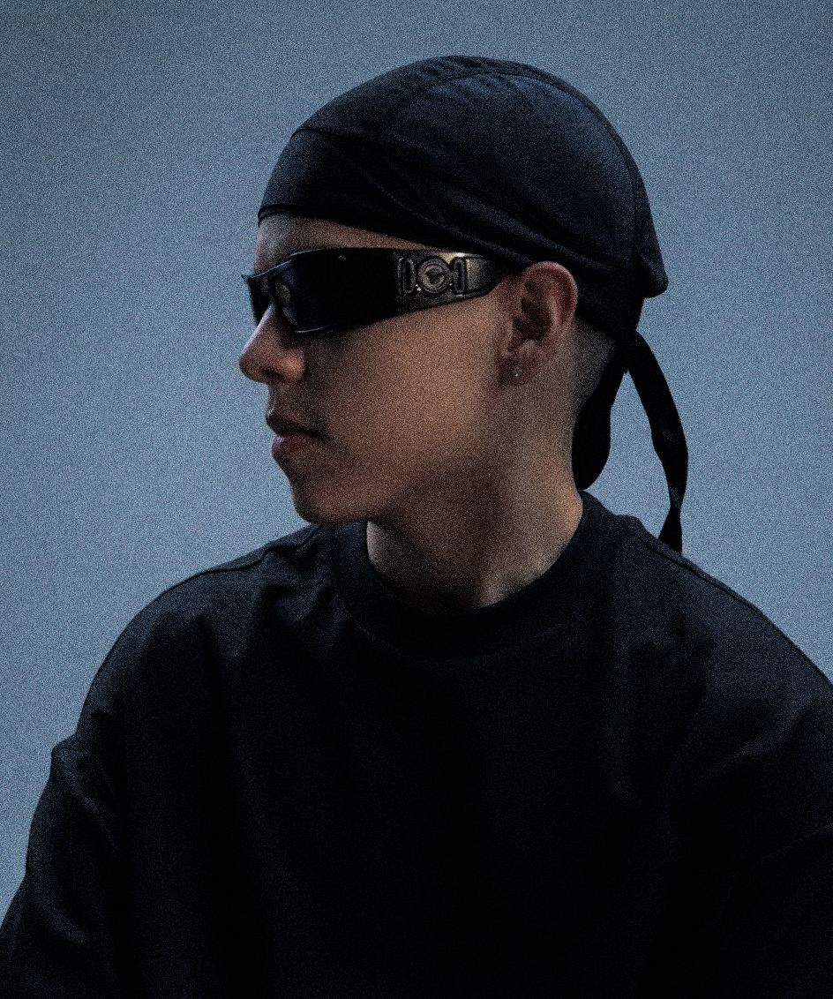

Acerca de
Xavier Cáceres es un artista visual cuya obra nace de la curiosidad, la observación y el interés por explorar nuevas posibilidades dentro del arte. Cada pieza es el resultado de un proceso en el que la idea inicial evoluciona a través del trabajo con los materiales, las texturas y la composición.
Su objetivo es crear obras que mantengan su fuerza más allá de una primera impresión. En lugar de imponer un significado concreto, busca dejar espacio para que cada persona establezca una conexión propia con la obra.
Entiende cada pieza como única, desarrollada sin prisas y con la convicción de que el resultado final depende tanto de la idea como del cuidado dedicado a cada etapa del proceso.
A través de Xavier Art Space comparte una selección de obras originales con la intención de acercar su trabajo a coleccionistas, amantes del arte y personas interesadas en descubrir piezas creadas con autenticidad, dedicación y atención a los detalles.
Nacido en Venezuela en 1999, Xavier creció en un país marcado por el contraste, la cercanía de su gente y la fuerza de su cultura. Aunque hoy desarrolla su trabajo en España, la memoria de los lugares donde vivió durante los primeros veintitrés años de su vida continúa acompañando su proceso creativo. Las calles de su infancia, las conversaciones de barrio y la calidez de las personas que lo rodearon permanecen presentes en su manera de entender el arte. Esa influencia convive de forma natural con su trabajo, aportándole identidad y una mirada que busca crear obras con carácter, cercanas y abiertas a generar una conexión genuina con quien las contempla.

La música, la fotografía y el dibujo ocupan un lugar esencial en mi proceso creativo. Encuentro una fuente constante de inspiración en la atmósfera que son capaces de construir y en la forma en que transforman emociones, recuerdos e ideas en imágenes y narrativas. El hip hop, en particular, ha influido profundamente en mi manera de entender la expresión artística por su autenticidad, su identidad visual y su capacidad para contar historias desde una perspectiva personal. Esa influencia se refleja en mi trabajo, donde busco que cada obra no solo tenga fuerza visual, sino también la capacidad de sugerir un relato y despertar una conexión que vaya más allá de lo que se ve a simple vista.
Residencia
España
Nacionalidad
Venezolano
Disciplinas
Pintura · Dibujo · Escultura
Desde
2018